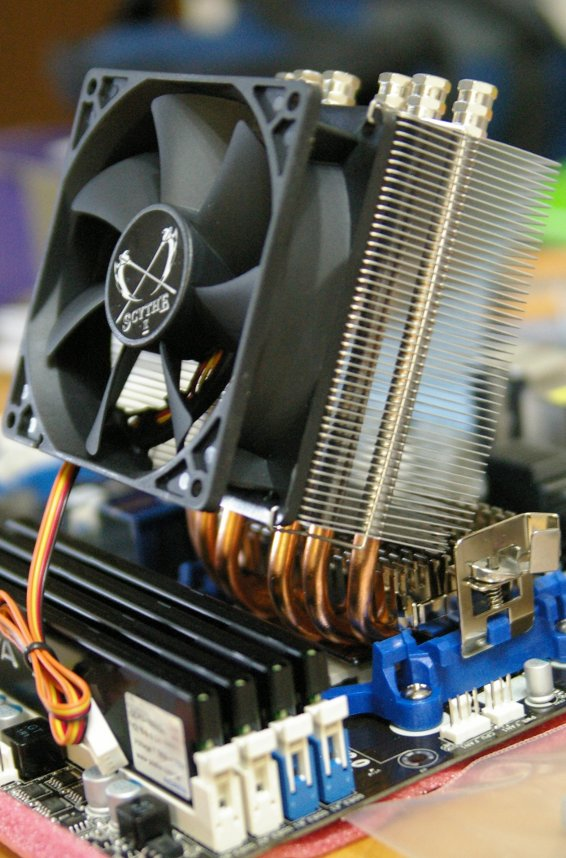
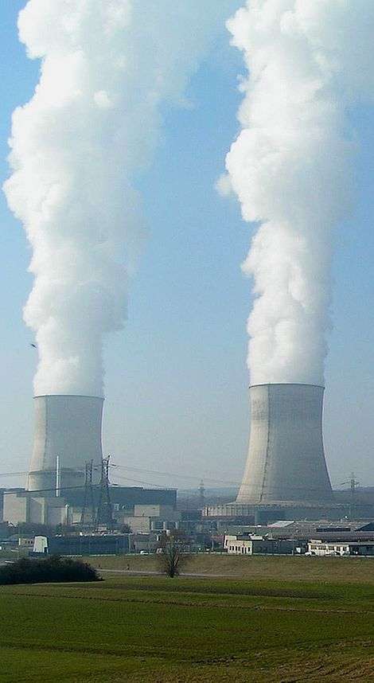

Can nanofluids exhibit "anomalous" thermal conductivity?
21/02/2018, University of Strathclyde, Chemical & process engineering
Marcus N. Bannerman
School of Engineering, University of Aberdeen
m.campbellbannerman@abdn.ac.uk
University of Aberdeen
University of Aberdeen
- Ancient university, established in 1495 (fifth in the UK).
- 5 Nobel prize winners: insulin treatment, crystalline electron diffraction, and partition chromatography.
- Currently has around 16,000 students.
- A general school of engineering with over 1000 UG students.
- James Clerk Maxwell was here, but was fired in 1860 when Marischal and King's college merged to form the university.
- Nanofluids are an attempt to "alloy" the properties of an imiscible material with a base liquid phase.
- By breaking the imiscible phase into nanometer sized particles, a
- The imiscible material may be a solid or liquid; however, primarily focussed on solids due to their high thermal conductivity.
- E.g., Copper/oil/CNT with water/ethylene glycol etc.
- Initial results reported in 2001 were promising, for copper in ethylene glycol
-
Enhancements of 40% for 0.2% v/v seemed improbable, leading to the term "anomalous".
Measured conductivities for 10 nm copper nanoparticles in ethylene glycol (+thioglycolic acid or or aged two days/months)1.
- An explosion of research followed, controversial results were published, doubt followed uncertainty.
- Methods of manufacturing, dispersion, measurement, and delay all varied the results.
-
This came to a head in 2009, where the International
Nanofluid Property Benchmark Exercise prepared
standard samples and issued them to multiple
organizations for testing.
J. Buongiorno, D. C. Venerus, N. Prabhat, T. McKrell, J. Townsend, R. Christianson, Y. V. Tolmachev, P. Keblinski, Lin-wen Hu, J. L. Alvarado, I. C. Bang, S. W. Bishnoi, M. Bonetti, F. Botz, A. Cecere, Y. Chang, G. Chen, H. Chen, S. J. Chung, M. K. Chyu, S. K. Das, R. Di Paola, Y. Ding, F. Dubois, G. Dzido, J. Eapen, W. Escher, D. Funfschilling, Q. Galand, J. Gao, P. E. Gharagozloo, K. E. Goodson, J. G. Gutierrez, H. Hong, M. Horton, K. S. Hwang, C. S. Iorio, S. P. Jang, A. B. Jarzebski, Y. Jiang, L. Jin, S. Kabelac, A. Kamath, M. A. Kedzierski, L. G. Kieng, C. Kim, J.-H. Kim, S. Kim, S. H. Lee, K. C. Leong, I. Manna, B. Michel, R. Ni, H. E. Patel, J. Philip, D. Poulikakos, C. Reynaud, R. Savino, P. K. Singh, P. Song, T. Sundararajan, E. Timofeeva, T. Tritcak, A. N. Turanov, S. Van Vaerenbergh, D. Wen, S. Witharana, C. Yang, W.-H. Yeh, X.-Z. Zhao, and S.-Q. Zhou
"A benchmark study on the thermal conductivity of nanofluids",
J. Appl. Phys., 106, 094312 (2009)
- Results agreed with each other to within $\pm10$%, and were approximated by Maxwell theory (AKA Hashin-Shtrikman bounds).
- Most data published still fits between the classical limits of series/parallel resistance1. Controversy over?2
- No, many authors believe there are still truly anomalous results which are outside Maxwell or classical bounds3; however, the results have large scatter.
- Maxwell developed in 1873 (post-Aberdeen) an expression for the electrical conductivity of a two-component mixture, deemed "Maxwell theory", which also works equally well for heat.
- It assumes suspended particles are infinitely separated, no interfacial resistance, and uses a superpostition of the solution for temperature around a spherical inclusion embedded in a linear temperature gradient.

-  Technologies such as heat pipes are widely used in electronic devices. These exploit phase change to transport heat.
- Yet heat dissipation is a major concern; i.e. processors produce 100 W on a 9x9 mm die (1.2 MW/m${}^2$).
- Here, the transfer fluid (air) and geometry limiting.
- For smaller, more efficient exchangers, better transfer fluids are needed.
-  Water is cheap, inert, widely available, and has excellent properties.
- The relatively high heat-capacity and enthalpy of vaporization with relatively low viscosity make water ideal for storing and transporting heat.
- However, water has an unimpressive thermal conductivity compared to other materials:
-
The absolute classical limits are series and parallel resistances.
Series parallel limits.
- If data is outside these limits then it is truly anomalous.
- Tighter bounds are given by the Maxwell/Hashin-Shtrikman bounds.
-
The two Maxwell/HS limits depend on which phase is the "continuous" phase and which is "dispersed".
Series parallel limits.
- This still assumes a homogenized structure to the fluid; a "continuous" nanoparticle phase requires some imagination (see right).
- Most results fit these bounds, results outside these are deemed "anomalous".
Conclusions from history:
- Results are surprising, but the majority are within classical limits (not anomalous).
Questions from history:
- Are anomalous effects due to some non-classical (molecular) effect possible?
- If so, why is it so difficult to measure this anomalous conductivity?
- Is scatter due to poor experimental procedure, high-difficulty, and/or some phenomena?
Definitions of thermal conductivity
The definition of thermal conductivity in single-component materials: \begin{align*} \vec{q} = - k\, \nabla\,T \end{align*} This thermal conductivity, $k$, is often reported from experiments which attempt to extract this value indirectly; however, nanofluids are essentially molecular mixtures.
The definition of thermal conductivity in fluid mixtures arises from linear phenomenological theory: \begin{align*} \vec{J}_q &= L_{q,q}\,\vec{X}_q + \sum_a L_{q,a}\,\vec{X}_a \end{align*} where $\vec{X}_q$ is the heat "force", $\vec{X}_a$ is the diffusion force of species $a$ and $\vec{L}_{qa}$ is the thermal diffusivity.
$\vec{L}_{qq}$ is the thermal conductivity, provided $\vec{X}_a=0$.
Our difficulty is increased as there is no unique separation of the heat flux into a thermal, $\vec{X}_q$, and diffusive part, $\vec{X}_a$.
In the presence of choice, the most convenient choice (for calculations) is best: \begin{align*} \vec{X}_q &= -T^{-1} \nabla T & \vec{X}_a &= -T^{-1}\nabla \left(\mu_a\,T^{-1}\right) \end{align*}
Taking the expression for the corresponding mass flux: \begin{align*} \vec{J}_a &= L_{q,a}\,\vec{X}_q + \sum_b L_{a,b}\,\vec{X}_b \end{align*} where $L_{a,b}$ is a mutual diffusion coefficient.
In binary mixtures, we can solve for a uniquely defined "steady state" thermal conductivity ($\vec{J}_a = 0$): \begin{align*} \lambda = L_{q,q} - \frac{L_{a,q}^2}{L_{a,a}} \end{align*}
Conclusions on definition:
- The thermal conductivity in general is not well defined.
- We have many definitions of $L_{q,q}$. Used here is: \begin{align*} \vec{J}_q &= -\frac{L_{q,q}}{T}\,\nabla T & \text{iff $\nabla \left(\mu_a\,T^{-1}\right)=0$} \end{align*}
- A definition which is invariant under changes in the thermodynamic forces is: \begin{align*} \lambda &= L_{q,q} - \frac{L_{a,q}^2}{L_{a,a}} & \text{iff $\vec{J}_a=0$} \end{align*}
Modeling nanofluids
- Most models are either classical, or do not fully capture molecular effects.
- Some badly mix hydrodynamic and molecular effects, e.g., Brownian nanoconvection.
- We need a model which is well understood, from the molecular to hydrodynamic scale:
- The only real option is the hard-sphere fluid, where we have molecular dynamics, kinetic theory, and accurate equations of state.
Equilibrium molecular dynamics simulations of binary mixture of hard-spheres, 10:1 size ratio, with 1000:1 mass ratio approximating a nanofluid.
10:1 size, 1000:1 mass, binary HS at constant volume fraction $\phi$ or constant pressure $p$. Symbols are MD and lines are from kinetic theory.1
- Truly anomalous results exist in $L_{q,q}$ for hard-spheres, and all nanofluids at least share key features with this system.
- Nanoparticles (in this case) are insulating. If $L_{qq}$ is a useful definition then this is an enhancement like the olive-oil/water system.
- Analyzing the kinetic theory expressions, $L_{qq}$ has a dominant term: \begin{align*} \vec{J}_q \approx\left(C_V^{Nano} - C_V^{Base}\right)k_B\,T\,L_{Nano,q} T^{-1}\nabla T \end{align*}
- Large mass difference (as $C_V=5\,m/2$), coupled with thermophoresis causes heat pumping effect IF $L_{qq}$ is relevant.
Graphical illustration of heat flux via thermophoresis. Momentum conservation causes equal and opposite fluxes of mass. If there is a heat capacity imbalance, this results in a flux.
"Light" nanofluids (size 2:1, mass 1:6) have anomalous dehancements in $\lambda$ while anomalous enhancements appear in $L_{q,q}$.
Non-equilibrium molecular dynamics
Conclusions
-
Binary mixtures of hard-spheres used as a model
nanofluid display both anomalous enhancements and
dehancements:
Classical limits can be broken. - $\lambda$ is the most appropriate definition of the thermal conductivity as NEMD results reach this at steady state.
- Enhancements (in this system and if they exist), are short lived before the system diffuses significantly ($k\to\lambda$).
Outlook
- These results provide a recipe for anomalous nanofluids, lets go make and test some!
- Super-enhancements are transient, can we design equipment which operates in the transient regime?
- Only way to test this is through coupled kinetic theory/hydrodynamic simulations.
Simulation of two heated walls ($k_B\,T=\{1,\,1.5\}$) ten NP diameters apart contacting a size ratio 1:0.5, mass ratio 1:0.5, $\rho=0.2$, $k_B\,T=1$ system.